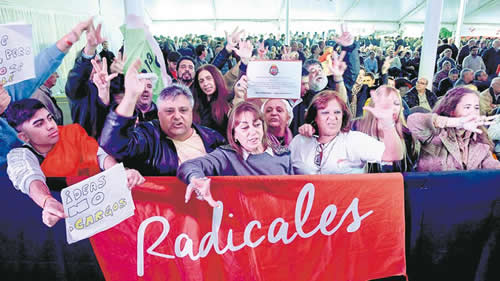

Real Chubut - Agencia de Noticias


No cambiemos

A pesar de los cantos insultantes para Mauricio Macri de una gran parte de los delegados, la convención radical decidió continuar en la alianza Cambiemos. Designaron una comisión negociadora con el macrismo para discutir la fórmula presidencial. Cornejo afirmó que "hay posibilidades ciertas de perder en octubre y en el ballottage"
Hubo muchos discursos y hasta insultos, pero la Convención radical ratificó la continuidad en Cambiemos. Luego de una extensa jornada de discusiones en Parque Norte, la UCR definió que buscará una ampliación de la alianza, para lo que conformó una comisión negociadora con el macrismo. Buscarán que haya un radical en la fórmula con Mauricio Macri o, en su defecto, ir a unas PASO con el Presidente. Desde el Gobierno se mostraron conformes con el resultado, que fue consensuado la noche anterior por el sector del titular de la UCR, Alfredo Cornejo, y el del vicegobernador bonaerense, Daniel Salvador. En la Rosada afirmaron que la discusión de la fórmula presidencial quedará para junio.
El resultado de la Convención se cocinó a fuego lento en un encuentro entre el sector de radicales que buscaba seguir en Cambiemos sin mayores planteos y los que buscaban una continuidad pero con modificaciones en la alianza. El principal referente del primer grupo es Salvador y el segundo estaba representado por Cornejo. Afuera del acuerdo quedaron los que buscaban romper Cambiemos y acordar con el socialismo, Margarita Stolbizer y Roberto Lavagna. Entre ellos, estaban Ricardo Alfonsín, Federico Storani, Juan Manuel Casella y hasta el titular de la Convención, Jorge Sappia, y habían reunido 71 convencionales. Los militantes de ese sector hicieron ruido a lo largo de toda la Convención y abuchearon a los candidatos. Había 314 convencionales de los 347 y, por primera vez en mucho tiempo, no estuvo Enrique "Coti" Nosiglia.
Hubo muchos discursos y hasta insultos, pero la Convención radical ratificó la continuidad en Cambiemos. Luego de una extensa jornada de discusiones en Parque Norte, la UCR definió que buscará una ampliación de la alianza, para lo que conformó una comisión negociadora con el macrismo. Buscarán que haya un radical en la fórmula con Mauricio Macri o, en su defecto, ir a unas PASO con el Presidente. Desde el Gobierno se mostraron conformes con el resultado, que fue consensuado la noche anterior por el sector del titular de la UCR, Alfredo Cornejo, y el del vicegobernador bonaerense, Daniel Salvador. En la Rosada afirmaron que la discusión de la fórmula presidencial quedará para junio.
El resultado de la Convención se cocinó a fuego lento en un encuentro entre el sector de radicales que buscaba seguir en Cambiemos sin mayores planteos y los que buscaban una continuidad pero con modificaciones en la alianza. El principal referente del primer grupo es Salvador y el segundo estaba representado por Cornejo. Afuera del acuerdo quedaron los que buscaban romper Cambiemos y acordar con el socialismo, Margarita Stolbizer y Roberto Lavagna. Entre ellos, estaban Ricardo Alfonsín, Federico Storani, Juan Manuel Casella y hasta el titular de la Convención, Jorge Sappia, y habían reunido 71 convencionales. Los militantes de ese sector hicieron ruido a lo largo de toda la Convención y abuchearon a los candidatos. Había 314 convencionales de los 347 y, por primera vez en mucho tiempo, no estuvo Enrique "Coti" Nosiglia.
En la reunión entre los popes del radicalismo, que incluyó a Cornejo, Salvador, Mario Negri y Gerardo Morales, tuvo una primera etapa en la que afinaron el documento que luego sería aprobado por la Convención radical. El texto, que en su primera versión tenía duras críticas al Gobierno, fue pasteurizado y librado de las partes más urticantes. Esa parte del encuentro duró no más de media hora, según uno de sus asistentes. Luego se dedicaron a hablar de las derrotas que vienen sufriendo en las provincias y de cómo vienen perdiendo gobiernos radicales, como el de Santa Rosa y el de Córdoba Capital. No faltaron los cuestionamientos al Gobierno nacional por no apoyar a los candidatos locales y hasta las sospechas de que viene jugando con los gobernadores del PJ más que con los aliados radicales. El diagnóstico de ese encuentro fue crudo: los radicales ven difícil que Macri sea reelecto, pero hay un dato peor. Ahora también dudan de las posibilidades de María Eugenia Vidal de remontar el escenario.
Tras esa noche de críticas amargas vino una Convención en la que por horas pusieron caras estoicas ante los insultos del sector rupturista y los discursos que cuestionaron la política económica de Macri. "Por más que lo queramos maquillar, Cambiemos es un cadáver y ya tiene mal olor", sostuvo el vicegobernador radical de Santa Fe, Carlos Fascendini.
No faltaron, del otro lado, los defensores de lo actuado. "Es cierto que la gestión en lo económico fui decepcionante, pero acá no hay fracaso", aventuró Facundo Suárez Lastra. "No podemos ir detrás de los que representan el populismo, aunque sea un populismo moderado", disparó Rodolfo Terragno hacia el sector que buscaba un acuerdo con Lavagna. "Y tampoco podemos cambiar 26 días antes del cierre de listas. Debemos cambiar Cambiemos, pero lo tenemos que cambiar nosotros", argumentó.
El único momento en que se aquietaron las aguas fue cuando votaron la incorporación de la paridad de género a las listas legislativas y a los cargos en el partido. Lo propuso Nora Arana en base a un proyecto de la convencional Lilia Puig y fue aprobado rápidamente por manos en alto.
Finalmente, triunfó la posición de continuar en Cambiemos y se aprobó el documento que, entre sus puntos principales, dice que mantiene la continuidad en Cambiemos pero que buscarán "su reformulación, ampliación, fortalecimiento, mejora e institucionalización". Para eso buscarán que la alianza tenga "un esquema de funcionamiento reglado y sistémico que provea certidumbre en los procesos decisorios".
Todo esto será negociado por una Comisión de Acción Política, que encabezará Cornejo, los gobernadores Gerardo Morales y Gustavo Valdés, y los dirigentes Emiliano Yacobitti, Alejandra Lorden (que responde a Salvador) y Ernesto Sanz. Deberán negociar con el oficialismo los lugares en las listas, la posibilidad de ir a unas PASO o –sobre todo– de que un candidato radical acompañe a Macri en la fórmula. También plantea otros detalles –y el demonio siempre está en los detalles– como que las boletas en la Ciudad de candidatos radicales puedan sumarse a la de presidente de Cambiemos.
"Triunfó la posición de un radicalismo que no se resigna a que la política sea el coto de caza de los personalismos. Ampliar la coalición electoral con competencia interna", sostuvo el titular de la UCR porteña Guillermo de Maya. Por su parte, Martín Lousteau sostuvo que los valores de Cambiemos no son "son incompatibles con los valores de cómo gobierna el socialismo en Santa Fe, o que son distintos a los de Margarita Stolbizer".
Cornejo, en su discurso de cierre, no fue concesivo: "Necesitamos corregir los errores políticos garrafales que se han cometido en este Gobierno, como la relación con muchas provincias donde no quisieron hacer un gran pacto y un acuerdo al principio del Gobierno. Esta estrategia fallida engordó los bolsillos de los gobernadores peronistas y no supieron construir ese gran acuerdo nacional". "Ratificamos el instrumento que tuvimos para vencer al populismo. Estamos orgullosos de lo que hicimos en el 2015, pero también con humildad y sin soberbia debemos decir que no ha alcanzado para conquistar a la clase media, que ha recibido solo el ajuste", afirmó el gobernador de Mendoza.
En la Rosada se mostraron complacidos con el resultado de la Convención: se trata de un factor de conflicto menos, en un frente electoral que se encuentra en pleno debate interno. "Estamos de acuerdo en darle mayor institucionalidad a la alianza Cambiemos. Es necesario de cara a un próximo mandato. Y entendemos que esa discusión esta centrada en la toma de decisiones y en la elaboración del plan de gobierno", se mostraron contemplativos. No ocurrió lo mismo con la posibilidad de unas PASO. "Una PASO al presidente es inusual. Y no vemos que se perfile un candidato competitivo de la UCR", advirtieron". "La discusión de las listas y la fórmula quedará para junio", señalaron. Y ahí es donde estará la verdadera batalla con los radicales.
Fuente: Página 12